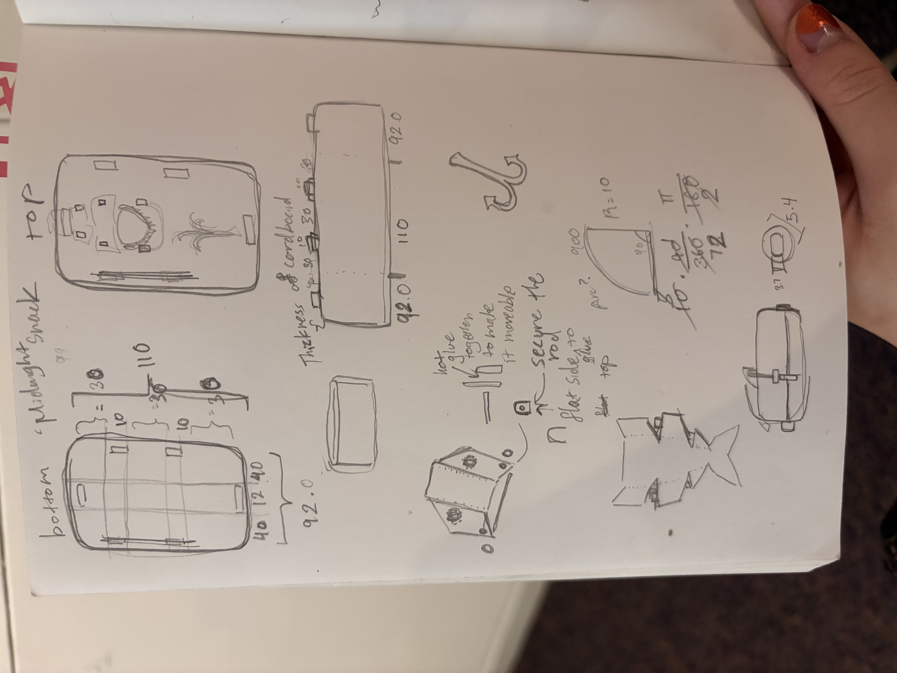
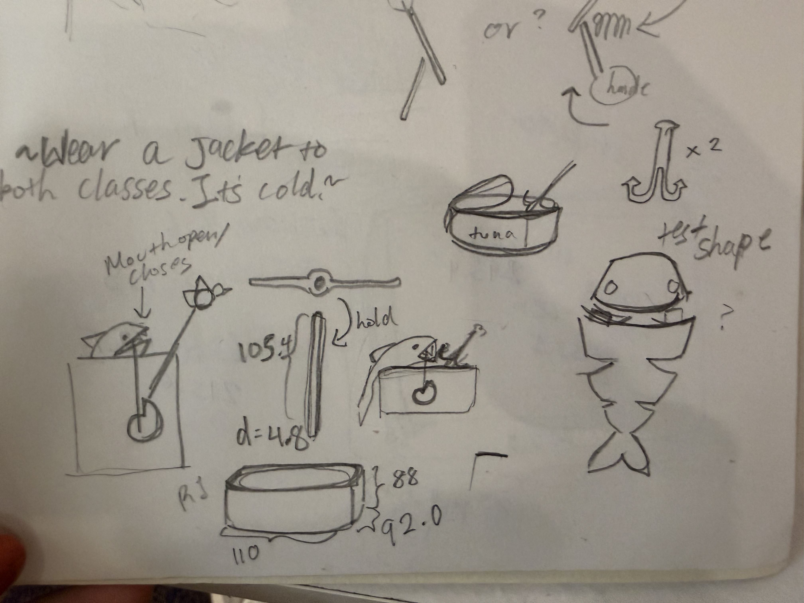

Create a kinetic sculpture that contains circuitry. Make sure to include at least one video/gif in your documentation.


The process of making this muncher is insane. It'll be called Midnight Snack, and the inspiration is a fish eating a worm from a fish hook. Additionally, I wanted to make it look like a tuna can, but in the end I didn't know how I could draw/paint that on, and settled with just adding the details of the hook and the worm.
The first order of what went wrong the assembly of the box; the 'walls' were too long, but I was able to tear some parts of it away and, for a lack of a better word, folded it itself in, and then it fitted the dimensions of the top and the bottom.
After that, I was able to get the motor in the side of my box without much trouble--at some point I did hot glue the bolts into the sides of the box for better hold. I used scissors and small screws to get a structure into the box.
I attatched the head with a rod inbetween the holes, in which, again I used more hot glue to secure. After some trial and error I used two more pieces of cardboard to secure the head while making it able to move.
Making the rod that spins underneath was more annoying. I first cut up and attatched bunches of cardboard with the cut-out to hold the spinning motor--Actually the wooden slot was given to me by Max. Credits to him--and using a lot of hot glue I could make the entire thing fit. My problems then were that, one, the rod would escape the motor and fall because the other side was not secure/out of a hole. I first tried to solve this by hot gluing the circle to the sides--then quickly got rid of it since it secured the motor--and I used spare cardboard to trap the outside rod to the box.
I attatched a second rod to stabilitze the other rod that would move up and down with not much difficulty. The rod that moves up and down itself however, posed some problems. It was until Claudia--Again, credits to her--told me that I should try using a square rod instead so that it won't move as much as a rod would. She is right. After that, the rest was decoration.